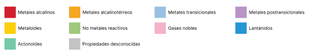

Tabla Perodica de los Elementos
1
H
Hidrogeno
2
He
Helio
3
Li
Litio
4
Be
Berilio
5
C
Carbono
6
C
Carbono
7
N
Nitrogeno
8
O
Oxigeno
9
F
Fluor
10
Ne
Neon
11
Na
Sodio
12
Mg
Magnesio
13
Ai
Aluminio
14
Si
Silicio
15
P
Fosforo
16
S
Azufre
17
Ci
Cloro
18
Ar
Argon
19
K
Potasio
20
Ca
Calcio
21
Sc
Escandio
22
Ti
Titanio
23
V
Vanadio
24
Cr
Cromo
25
Mn
Manganeso
26
Fe
Hierro
27
Co
Cobalto
28
Ni
Niquel
29
Cu
Cobre
30
Zn
Zin
31
Ga
Galio
32
Ge
Germanio
33
As
Arsenico
34
Se
Selenio
35
Br
Bromo
36
Kr
Kripton
37
Rb
Rubidio
38
Sr
Estroncio
39
Y
itrio
40
Zr
Circonio
41
Nb
Niobio
42
Mo
Molibdeno
43
Tc
Tecnecio
44
Ru
Rutenio
45
Rh
Rodio
46
Pd
Paladio
47
Ag
Plata
48
Cd
Cadmio
49
In
Indio
50
Sn
Estano
51
Sb
Antimonio
52
Te
Telurio
53
I
Yodo
54
Xe
Xenon
55
Cs
Cesio
56
Ba
Bario
57
La
Lantano
72
Hf
Hafnio
73
Ta
Tantalo
74
W
Wolframio
75
Re
Renio
76
Os
Osmio
77
Ir
Iridio
78
Pt
Platino
79
Au
Oro
80
Hg
Mercurio
81
Tl
Talio
82
Pb
Plomo
83
Bi
Bismuto
84
Po
Polonio
85
At
Astato
86
Rn
Radon
87
Fr
Francio
88
Ra
Radio
89
Ac
Actinio
104
Rf
Rutherfordio
105
Db
Dubnio
106
Sg
Seaborgio
107
Bh
Bohrio
108
Hs
Hassio
109
Mt
Meitnerio
110
Ds
Darmstadtio
111
Rg
Roentgenio
112
Cn
Copernicio
113
Nh
Nihonio
114
Fl
Flerovio
115
Mc
Moscovio
116
Lv
Livermorio
117
Ts
Teneso
118
Og
Oganeson
58
Ce
Cerio
59
Pr
Praseodimio
60
Nd
Neodimio
61
Pm
Prometio
62
Sm
Samario
63
Eu
Europio
64
Gd
Gadolinio
65
Tb
Terbio
66
Dy
Disprosio
67
Ho
Holmio
68
Er
Erbio
69
Tm
Tulio
70
Yb
Iterbio
71
Lu
Lutecio
90
Th
Torio
91
Pa
Protactinio
92
U
Uranio
93
Np
Neptunio
94
Pu
Plutonio
95
Am
Americio
96
Cm
Curio
97
Bk
Berkelio
98
Cf
Californio
99
Es
Einstenio
100
Fm
Fermio
101
Md
Mandelevio
102
No
Nobelio
103
Lr
Lawrencio
